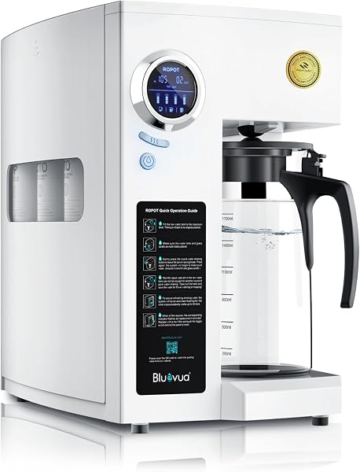
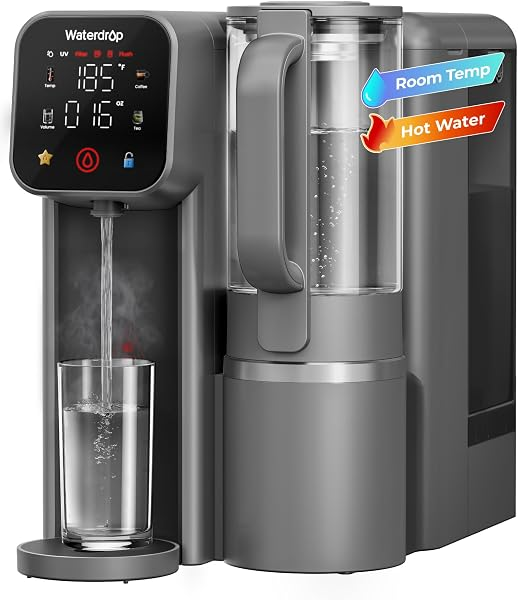
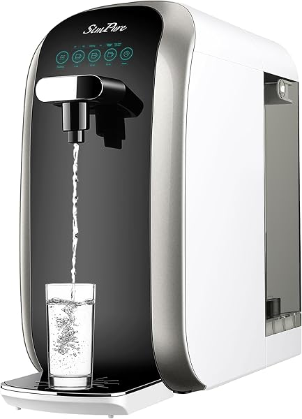
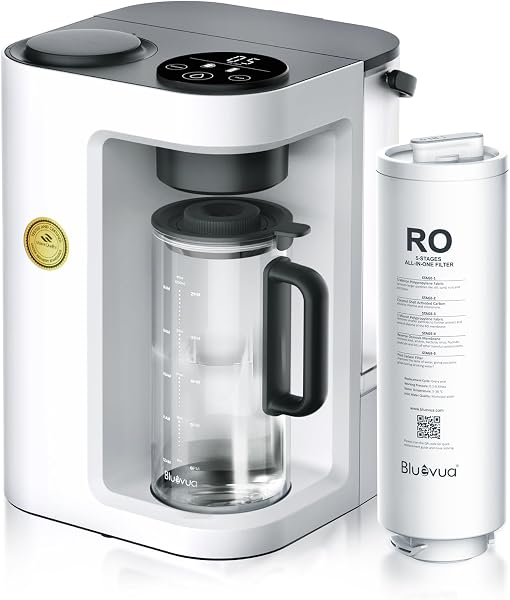
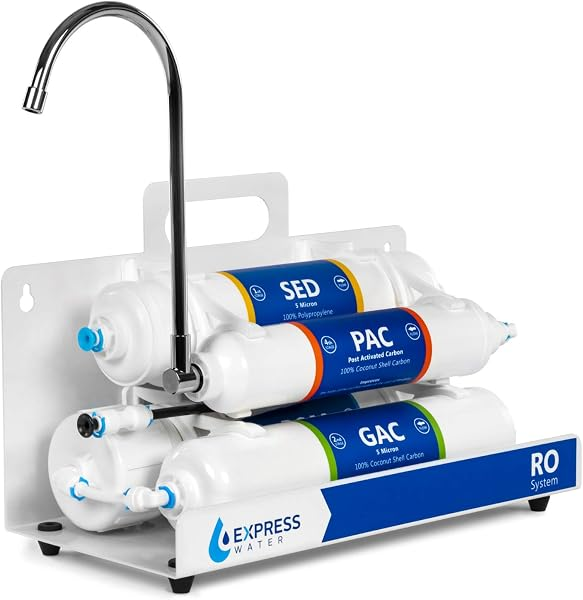

Best Countertop Reverse Osmosis Systems 2026 (No Plumbing Required)
PureFlow Lab is reader-supported. We may earn a commission when you buy through links in this guide — at no extra cost to you. As an Amazon Associate, we earn from qualifying purchases. See our Disclosure for details.
Top Picks (At a Glance)
The best countertop reverse osmosis systems for 2026, by use case:

Bluevua RO100ROPOT — 5-Stage, Remineralization
The category leader. 5-stage RO with remineralization, WQA certified, fully portable (no plumbing or installation), and the most-reviewed countertop RO on Amazon — 3,600+ ratings at 4.6 stars. The default pick for most renters and anyone who wants RO water without touching their plumbing. ~$299.
Check Price on Amazon →
AquaTru Classic — 4-Stage, Independently Certified
The established premium name in countertop RO. Independently certified to reduce 80+ contaminants, BPA-free, with a track record older than most of the category. The pick if third-party certification and brand reputation matter most. ~$449–$475. Read our full AquaTru review.
Check Price on Amazon →
Waterdrop M6H Instant Hot — RO + Hot Water Dispenser
RO-purified water plus an on-demand hot water dispenser with multiple temperature settings — great for tea, coffee, instant noodles, or baby formula. NSF/ANSI 58 & 372 certified, glass pitcher included. ~$299. Part of the Waterdrop lineup.
Check Price on Amazon →
SimPure Y7P-BW — UV Countertop RO
A built-in UV sterilization stage on top of RO filtration, NSF/ANSI 372 certified, and one of the best-reviewed budget countertop units (3,300+ ratings). The pick if you want UV peace of mind at a lower price. ~$218.
Check Price on Amazon →
Bluevua RO100ROPOT-Lite — 4-Stage Budget
The lighter, cheaper Bluevua. Same portable no-plumbing design, simpler 4-stage filtration, under $200, and 2,400+ reviews at 4.5 stars. The pick to get into countertop RO at the lowest credible price. ~$199.
Check Price on Amazon →
Express Water EZRO5 — Faucet-Attach RO
A faucet-attach (rather than tank-reservoir) countertop RO. Connects to your existing faucet, no tank to fill. 4.0-star rating — the weakest-reviewed here — but the cheapest entry point. ~$165. Part of the Express Water lineup.
Check Price on Amazon →TL;DR: Countertop reverse osmosis gives you RO-purified water with zero plumbing — perfect for renters, apartments, dorms, or anyone who can’t drill into cabinets. For most people, the Bluevua RO100ROPOT (~$299) is the right pick: the most-reviewed countertop RO on Amazon, remineralization included, fully portable. If independent certification and brand reputation matter most, the AquaTru Classic (~$449–$475) is the premium choice. Want hot water on demand? The Waterdrop M6H Instant Hot (~$299) adds a dispenser. On a budget, the Bluevua Lite (~$199) or SimPure Y7P-BW (~$218, with UV) deliver. If you can install under your sink, an under-sink RO system gives more water for less money — see our whole house vs under-sink guide to decide.
Why Choose a Countertop RO System?
Reverse osmosis is the gold standard for drinking water purification — it removes dissolved solids, heavy metals, fluoride, and most contaminants that carbon filters leave behind. But traditional RO systems install under your sink, which means drilling a faucet hole, connecting to your water line, and mounting a storage tank in the cabinet. That’s a dealbreaker for renters, apartment dwellers, and anyone who doesn’t want to modify their kitchen.
Countertop RO solves that. These systems sit on your counter, require no plumbing or installation, and deliver the same RO-purified water. The trade-offs are real — they take counter space, hold less water at a time, and cost more per gallon over the long run — but for the right person, the convenience is worth it.
Choose countertop RO if you:
- Rent, or can’t/won’t modify your plumbing
- Live in an apartment, dorm, or temporary housing
- Want RO water you can take with you when you move
- Don’t want to drill into your sink or countertop
- Want a system up and running in 5 minutes, not an afternoon
Choose under-sink RO instead if you: own your home, want more water for less money, and don’t mind a one-time install. See our whole house RO vs under-sink RO guide for the full decision framework.
How Countertop RO Systems Work (Two Types)
Not all countertop RO units work the same way. There are two designs, and the difference matters:
1. Tank/reservoir (portable) units — Most modern countertop RO systems (Bluevua, AquaTru, SimPure, Waterdrop M6H) are self-contained. You pour tap water into a reservoir, the system filters it through the RO membrane, and purified water collects in a separate tank or pitcher. No connection to your plumbing at all — you can use them anywhere there’s an outlet. This is the dominant, most convenient design.
2. Faucet-attach units — A few systems (like the Express Water EZRO5) connect to your existing kitchen faucet with a diverter. No tank to fill, but you’re tied to the sink and some users find the diverter setup fiddly. Generally cheaper but lower-rated.
For most buyers, a tank/reservoir unit is the better experience — true portability, no faucet hardware, and you can fill it from any tap. The picks in this guide are reservoir-type unless noted.
Top Picks Detailed
Best Overall: Bluevua RO100ROPOT
The Bluevua RO100ROPOT is the most-reviewed countertop RO system on Amazon (3,600+ ratings at 4.6 stars) and the right pick for most people. 5-stage filtration with remineralization (so the water doesn’t taste flat), WQA certification, a clean portable design, and a smart display showing water quality. Fill the reservoir, press a button, and you have RO water — no plumbing, no tools.
The remineralization is a real advantage: many countertop units produce flat-tasting RO water, while the Bluevua adds minerals back for a more natural taste. The portability means it works in a rental, a dorm, an RV, or an office. The main trade-off is the reservoir capacity — you refill it periodically rather than having unlimited on-demand water — but for drinking and cooking, it’s more than enough.
Pros: Most-proven countertop RO (3,600+ reviews), remineralization included, WQA certified, fully portable, water-quality display. Cons: Reservoir capacity means periodic refilling, takes counter space, pricier per gallon than under-sink RO long-term.
Price at last check: $299.00. Check Price on Amazon →
Best Certified / Premium: AquaTru Classic
The AquaTru Classic is the established premium name in countertop RO, and its differentiator is certification: AquaTru is independently certified to reduce 80+ contaminants, which is a stronger third-party verification claim than most competitors make. BPA-free construction, a longer track record than nearly any countertop brand, and a refined 4-stage RO process.
You pay for that pedigree — at ~$449–$475 it’s the most expensive pick here — but for buyers who want the most-certified, most-established countertop RO, AquaTru is the answer. AquaTru also runs a direct affiliate program that may offer better pricing or bundles than Amazon. For the full breakdown of the AquaTru lineup (Classic, Carafe, and Connect), see our AquaTru review.
Pros: Independently certified for 80+ contaminants, most-established countertop brand, BPA-free, refined design. Cons: Most expensive pick here, fewer Amazon reviews than Bluevua on the current listing, replacement filters are proprietary.
Price at last check: ~$449–$475. Check Price on Amazon →
Best with Hot Water: Waterdrop M6H Instant Hot
The Waterdrop M6H Instant Hot adds something no other pick here offers: an on-demand instant hot water dispenser with multiple temperature settings. RO-purified water plus the ability to dispense it hot — for tea, coffee, instant noodles, or baby formula — without a separate kettle. NSF/ANSI 58 & 372 certified, glass pitcher included, 4.6-star rating.
This is the pick if the hot water feature genuinely fits your routine. If you make a lot of tea or use hot water often, the M6H replaces both your RO system and your kettle in one countertop unit. It’s part of Waterdrop’s broader lineup — see our Waterdrop review for how it fits alongside their tankless under-sink systems.
Pros: Instant hot water dispenser (unique here), NSF 58 & 372 certified, glass pitcher included, 4.6-star rating, sleek design. Cons: Hot water feature adds cost and counter footprint, reservoir-based, proprietary Waterdrop filters.
Price at last check: $299.00. Check Price on Amazon →
Best with UV: SimPure Y7P-BW
The SimPure Y7P-BW adds a UV sterilization stage to countertop RO, NSF/ANSI 372 certified, and it’s one of the best-reviewed budget units in the category (3,300+ ratings). The UV provides extra peace of mind against bacteria — useful if your tap water quality is questionable or you simply want the belt-and-suspenders approach.
At ~$218 it undercuts the Bluevua and AquaTru while adding the UV stage neither includes at this price. The 4.2-star rating is slightly below the Bluevua’s 4.6, but the value-plus-UV combination makes it a strong budget-conscious pick.
Pros: UV sterilization included, NSF 372 certified, well-reviewed (3,300+ ratings), good value, portable. Cons: 4.2-star rating slightly below category leaders, UV bulb adds a maintenance item, reservoir-based.
Price at last check: $217.99. Check Price on Amazon →
Best Budget: Bluevua RO100ROPOT-Lite
The Bluevua RO100ROPOT-Lite is the lighter, cheaper version of our top pick. Same portable no-plumbing design, a simpler 4-stage filtration process (vs the full RO100ROPOT’s 5-stage with remineralization), under $200, and 2,400+ reviews at 4.5 stars. The right way to get into countertop RO at the lowest credible price from a proven brand.
What you give up vs the standard RO100ROPOT: the remineralization stage (so the water may taste flatter) and some capacity. What you gain: $100 saved. For a budget-focused buyer who just wants clean RO water, the Lite delivers.
Pros: Under $200, proven Bluevua brand, 2,400+ reviews, fully portable, simple to use. Cons: No remineralization (flatter taste), simpler filtration than the standard model, smaller capacity.
Price at last check: $199.00. Check Price on Amazon →
How to Choose a Countertop RO System
Five things to weigh:
Reservoir vs faucet-attach. Reservoir/portable units (Bluevua, AquaTru, SimPure, Waterdrop M6H) are more convenient and truly portable. Faucet-attach units (Express Water EZRO5) are cheaper but tie you to the sink. For most people, reservoir is the better experience.
Remineralization. RO strips minerals out, which makes the water taste flat to some people. Units with remineralization (Bluevua RO100ROPOT, AquaTru) add them back. If taste matters to you, prioritize this.
Counter space. These units take up roughly the footprint of a coffee maker or large pitcher. Measure your counter before buying — the hot-water models (Waterdrop M6H) are the largest.
Capacity and refilling. Reservoir units hold a few liters at a time and need periodic refilling. For one or two people, that’s a non-issue; for a large household, the refilling can get tedious (or you should consider under-sink RO instead).
Certification. Look for WQA or NSF/ANSI certification (58 for RO performance, 372 for lead-free). AquaTru leads on independent certification; Bluevua, Waterdrop, and SimPure all carry credible certifications.
Comparison Table
| System | Type | Filtration | Remineralization | Standout | Price |
|---|---|---|---|---|---|
| Bluevua RO100ROPOT | Reservoir | 5-stage | Yes | Most popular, 3,600+ reviews | $299 |
| AquaTru Classic | Reservoir | 4-stage | Optional | Most certified/established | $449–$475 |
| Waterdrop M6H | Reservoir | 7-stage | Mineral | Instant hot water | $299 |
| SimPure Y7P-BW | Reservoir | RO + UV | No | UV sterilization | $218 |
| Bluevua Lite | Reservoir | 4-stage | No | Best budget | $199 |
| Express Water EZRO5 | Faucet-attach | 5-stage | No | Cheapest | $165 |
FAQ
Are countertop reverse osmosis systems any good?
Yes — modern countertop RO systems deliver the same core purification as under-sink systems (removing dissolved solids, heavy metals, fluoride, and most contaminants) with zero plumbing. The trade-offs are counter space, periodic reservoir refilling, and a higher cost per gallon long-term. For renters, apartments, or anyone who can’t install under-sink, they’re an excellent solution. The Bluevua RO100ROPOT is the most-proven option.
Countertop vs under-sink RO — which is better?
It depends on your situation. Under-sink RO gives you more water, lower cost per gallon, and a hidden install — but requires plumbing work and home ownership (or landlord permission). Countertop RO requires no installation and is portable, but costs more per gallon and takes counter space. If you can install under-sink, it’s usually the better long-term value; if you can’t or don’t want to, countertop is the answer. See our full comparison.
Do countertop RO systems waste water?
Yes, like all reverse osmosis, countertop units produce some wastewater (the concentrated stream the membrane rejects). Reservoir units collect this in a separate waste tank you empty periodically. The ratio varies by model but is generally comparable to tank-based under-sink systems. It’s the inherent trade-off of RO purification.
Do I need remineralization in a countertop RO system?
It’s a taste preference, not a health requirement. RO removes minerals along with contaminants, which makes the water taste “flat” to some people. Remineralization (in the Bluevua RO100ROPOT and AquaTru) adds minerals back for a more natural taste. If you’ve found RO water tastes empty to you, prioritize a remineralizing model. For more on this, see our guide on whether RO water is good for you.
How much do countertop RO systems cost to run?
Beyond the upfront price, budget for replacement filters — typically $50-$120/year depending on the model and your usage. Reservoir units with multiple stages cost more to maintain than simpler ones. Factor this into the total cost, especially when comparing against an under-sink system that often has cheaper, more widely-available filters.
Can I take a countertop RO system when I move?
Yes — that’s one of their biggest advantages. Reservoir/portable units like the Bluevua and SimPure aren’t connected to your plumbing, so you simply unplug them and take them with you. This makes countertop RO ideal for renters and anyone in temporary housing.
Bottom Line
For most people, the Bluevua RO100ROPOT (~$299) is the best countertop reverse osmosis system — the most-proven option, with remineralization and true portability. Step up to the AquaTru Classic (~$449–$475) for the most certification and brand pedigree, add the Waterdrop M6H (~$299) if you want instant hot water, and save with the Bluevua Lite (~$199) or SimPure Y7P-BW (~$218, with UV). And if you can install under your sink, an under-sink RO system delivers more water for less money long-term.
Keep Reading
- Best Reverse Osmosis Systems for Home — under-sink picks (more water, lower cost if you can install)
- Whole House RO vs Under-Sink RO — countertop, under-sink, or whole-house?
- AquaTru Reverse Osmosis Review — deep dive on the premium countertop brand
- Waterdrop Reverse Osmosis Review — the M6H and the full Waterdrop lineup
- Best Tankless Reverse Osmosis Systems — for under-sink without the bulky tank
- Is Reverse Osmosis Water Good for You? — the remineralization question answered